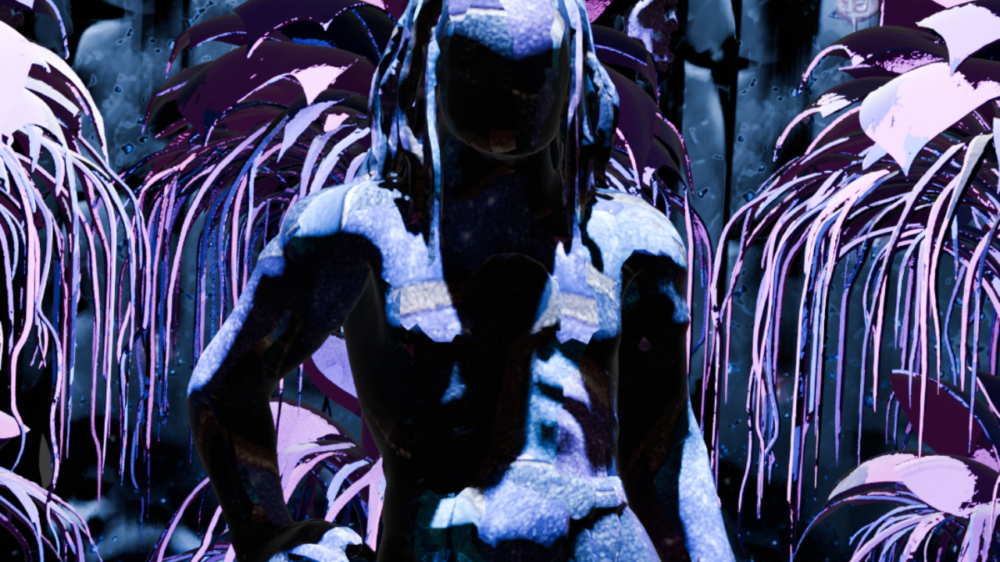

11 Creatures (+1)
8 Flora Assets
16 Structures
4 Characters (Rigged)
4 Ambient Audio
5 Tracks
2 Vertical Sequences
1 Font (Symbolic Script)
1 Audio Web App

Open for collaboration.
Website All Assets:
https://sites.google.com/view/bune-3d/avalon
YouTube Showcase & Audio:
https://www.youtube.com/playlist?list=PLo5fLmIgPY1xbgTmO_U7H2xPNpFe5glVE
Font:
https://github.com/Bunesky/avalon-symbol-font
Web Audio Language App:
https://bunesky.github.io/avalon-symbol-audio/
Avalon is an ongoing experimental project focused on building a complete 3D world through modular assets, visual systems, original audio, and its own symbolic language and writing system. All content has been created with the support of AI.